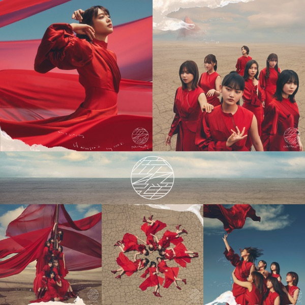

← 楽曲図鑑に戻る

初収録リリース「流れ弾」のジャケット
櫻坂46
発売日：2021-10-13収録：流れ弾（3rdSG）種別：ユニット曲センター：井上梨名・松田里奈作曲：中村泰輔編曲：中村泰輔ライブ披露：11件
上が後列、下が前列です。色付きがセンター。（公式発表に基づく）
井上梨名、松田里奈
このフォーメーションを編集する
流れ弾、Dead end、ソニア、ジャマイカビール、On my way、無言の宇宙、美しきNervous
← 前の曲「ジャマイカビール」次の曲「無言の宇宙」 →
 サカミチ
サカミチ 井上梨名
井上梨名 松田里奈井上梨名松田里奈
松田里奈井上梨名松田里奈